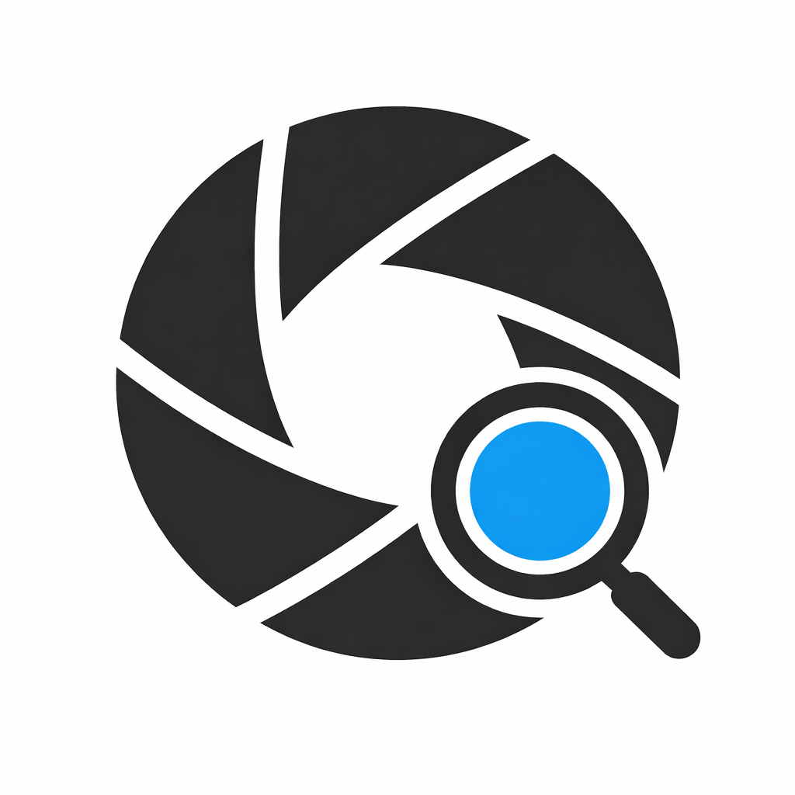

快速打开
打开 RAW 文件或整个文件夹，也可以直接把文件拖进窗口。

RawPickermacOS RAW culling app
为 RAW 照片初筛而做的轻量工具：打开一组照片，快速浏览，标记 5 星，筛选保留，再把选中的文件导出。
RawPicker 专注本地 RAW 浏览、评分和导出，不把照片上传到服务器，也不在工作流里塞进多余步骤。
打开 RAW 文件或整个文件夹，也可以直接把文件拖进窗口。
缩略图条、预览缓存和方向键导航，让第一轮筛选保持连贯。
用 5 星标记保留照片，评分写入同名 .xmp 附属文件。
一键筛选 5 星照片，再复制或移动照片及对应 XMP 文件。
查看相机、镜头、ISO、快门、光圈、焦距等关键元数据。
照片、评分和上次会话信息保存在你的 Mac 与你选择的文件夹中。
适合拍摄后第一轮粗选：先把明显要保留的照片挑出来，再交给后续修图工具继续处理。
选择 RAW 文件、文件夹，或直接拖放到窗口。
用方向键、缩略图和适应窗口视图快速检查画面。
用空格把保留照片设为 5 星，评分写入 XMP。
只看 5 星照片，并复制或移动到目标文件夹。
优先从 App Store 获取应用，也可以从 GitHub 或 Gitee 仓库查看源码、发布信息或参与贡献。